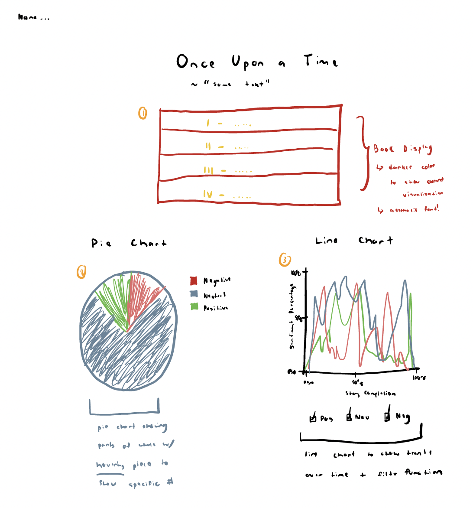

For this visualization, I want viewers to be able to see the data that I have processed and analyzed in a way that is simple to understand and easy to interpret given a complex dataset. I, of course, want to ensure that the visualization is accurate and the visualization methods that I pick are relevant to the data that I extract. Furthermore, I really think aesthetics are super crucial when it comes to a design so a simple yet effective design is what I am striving for. I want there a to be a clear story that is being told through the visualization. I want to be able to show the emotional tone of each story in a way that is easy to compare and contrast between stories. I also want to be able to show how the emotional tone of each story changes over time.I hope to achieve these goals through the use of a pie chart and a line chart. I think these two charts will be able to show the data in a way that is easy to understand and interpret. Lastly, overall, I want the design to be smooth and easy on the eyes with transitions and interactive parts. I want the user to be able to interact with the various features of the visualization and be able to see the data in a way that is easy to understand.I want the actual visualization and design to be user friendly so much of the features are obvious and intuitive to the user.
Since I am using a machine learning model (the RoBERTa model) to analyze the underlying emotional tone of each story, I want to be able to tell a story about how positive, neutral, or negative these stories actually are. It is valuable information to see if some stories are shed in a positive light or a negative light or even what is more probable through the data analysis it is a neutral tone. Positive tone referring to emotions of livelihood with happiness, joy, gratitude, pride, interest, and hope. Negative tone referring to emotions of anger, fear, shame, sadness, and guilt. I want to be able to tell a story about how these emotions are portrayed in each story overall and also how they change over time. It is crucial to see if the stories are emotionally tune with the audience since it is better to have stories of hope and resilience rather than fear and sadness. Additionally, from a historical standpoint, these stories are meant to give moral lessons so having a mix of positive and negative emotions helps give the point across. We can see based on this context if the stories that we analyze have a similar trend or not. So, to conclude, leveraging machine learning to analyze the emotional tone of stories isn't just an exercise, but rather it's a journey into the heart of human expression through writing, offering a mirror to the emotional tone evolving nature of storytelling.
I can highlight a different perspective by trying to show how positive or negative the stories are. The point of this is that it is interesting to analyze whether these stories whose audience is primarily children to be more positively or negatively portrayed as a whole and over time as the story progresses. This provides a very rich story in that one can quickly observe through like a pie chart where you can see which level of the story corresponds to positive, negative, and neutral emotions. This highlights the perspective of is it true that these stories rooted in giving moral lessons are more positive or negative in nature. This is a very interesting perspective to look at and I think it will be very interesting to see the results of this analysis. Another perspective that I can highlight is the change in emotional tone over time. This is very crucial to see whether or not the majority of the story was rooted in what type of emotions and what points of the story that it occurred. So, for a very popular children's story, you are able to analyze whether key moments and climaxes in the story relate to what type of emotions. Also, with the evolution of the story, you are able to quickly see if the resolution, falling action, conflict, etc. are more rooted in which type of emotional level.
So, since this is a full on website, I want to ensure that it it fully succinct and easy to use for various screen sizes at play. So I want to be able to support this feature first and foremost. Furthermore, I want to be able to implement a feature where one can click/filter through the various emotions or compare and contrast some of them on the line chart. So, basically, it would be a checkbox so that one can only see one of the lines out of three or compare two. This seems like it would be super beneficial to implement to not only compare two emotions but also just individually highlight on one type of emotion and compare how it evolves through the dynamics of the story. Obviously, the line chart would be the best way to do this since it is a time series. Furthermore, I want to be able to implement a feature where one can hover over the pie chart and see the exact percent related to that slice on the pie chart. This is a very crucial feature to have since just eyeballing it doesn't merely do the justice as the exact value. So, using d3-tip library for this would be a great use case to further enhance the visualization beyond the standard pie chart and make it more interactive and user friendly. The pie chart is a great way of seeing the data as a parts of the whole to quickly analyze the data. Also, having easy to understand axes is another thing I want to ensure that I have in this visualization. Lastly, the task of having a book display and then it changing dynamically based off that is really crucial to the visualization. This is the main task that I want to ensure that I have in this visualization since it is the main part of the visualization in terms of updating the various story data.
So, I will be having multiple designs and visualizations to help me achieve seeing the data over time and even as a whole. As mentioned briefly before, I will need to implement a pie chart and a line chart. The pie chart is intended to quickly glance at a story's overall composition of positive, negative, and neutral emotional tone. The pie chart helps me achieve this task since this visualization represents parts to a whole. Part of the reason why the pie chart design works so well for displaying this type of data is that its easily recognizable and interpretable as mentioned above. They provide a great visual distinction between the different parts of the whole. It also works great since there are only 3 categories of emotional tone so it is easy to see the difference. Thus, for these reasons a pie chart visualization is a great way to see the data. The line chart is intended to see how the emotional tone changes over time. This is a very crucial task to see how the story changes over a period of time, making it ideal for various fluctuations or patterns at the various parts of the plot in the short stories. Furthermore, it's a great visualization type since you can compare multiple data subsets at once which is applicable in my case. It's also a clear path to follow the data and how the emotional tone progresses. Another point is that one can highligh various anomalies/spikes that exist in the emotional tone of the story. Therefore, the line chart is an amazing design visualization that is applicable to my case. Lastly, I will be having a book display that will be changing the pie chart and the line chart dynamically based off the story that is selected. This is the most central part of my assignment as this makes the website super interactive and fun to play around with. The biggest thing is that there is not much you can do with a visualization where you are just selecting items. So, I want to ensure that I put aesthetics a top priority in this case to be able to make the website more cohesive.

So, in my design, I have necessary elements at the top of the page such as the title, subtitle, and my information. This is to introduce what the visualization will be about and offer some additional text describing more about it. Additionally, for the first design visualization, I have the book stack with the various books where the darker color represents which book you are on so this where visual encoding of color saturation comes into use. Furthermore, I hope to make this a cohesive website so that all parts of the website seamlessly connect from typography to color palette. Also, I am being intentional about the color hue to choose to make it feel like of a middle age/older theme with darker royal shades. I also want to be intentional about the font as well to feel like that as well. Then, getting into the pie chart, it is a pretty straightforward visual encoding with only 3 categories with 3 different colors. So, the visual encoding of three unique colors makes it super easy to differentiate them. For this visualization/design, I believe a pie chart is great to show parts of a whole and with a hover feature one can see what exactly the percentage of that chunk to the 100% is. Also, the presence of a legend is super crucial in identifying the various chunks. Lastly, the line chart is able to track consistent change over time in a super simple manner. The visual encoding used in this visualization is one of position and angle/slope that the line is from each point to another. Furthermore, the color hue makes it easy to tell the difference and track its change as well. If the colors were rather similar it would be more difficult to analyze. Sometimes the line chart can be a lot to process at once, so I have added a filter function at the bottom so that one can easily just take a look at one or two emotional tones at a time. Lastly, the inclusion of axes and titles is super important so that the viewer knows what they are looking at in the specific visualization.